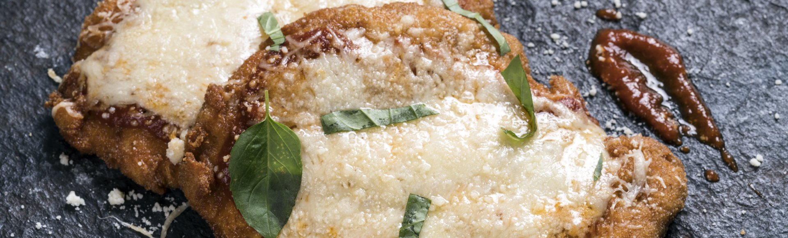

Chicken Parmesan Recipe

Description
One of the most famous non-pasta dishes in italian cuisine. So easy to make, that you can prepare it in your kitchen. Simple, fast and very very tasteful. Crispy chicken with a layer of tomato sauce and melted parmesan & mozzarella on top!
There are many variations of this dish, depending on anyone's preference on the sauce and parmesan, but in this recipe we keep it on the downside of both.
Ingredients
- 800gr chicken breast thinly slices (and pounded if possible)
- 2 eggs
- 500gr flour
- 200gr breadcrumbs
- olive oil
- salt
- 500gr tomato sauce
- 80gr grated parmesan cheese
- 120gr grated mozzarella cheese
- basil
Steps
- Season the chicken slices with salt.
- Dip each slice successively in the flour, the eggs & the breadcrumbs. (Mind the quantity of each ingredient)
- Place a frying pan on medium heat, put olive oil to cover half the chicken and let it heat up well.
- Fry up its slice until it has a golden color on both sides. Then remove the slices and place them on paper towels to take away the extra oil.
- Cover the bottom of a baking pan with tomato sauce and pre-heat the oven at 180℃.
- Put the fried chicken slices in the baking pan and smear them with tomato sauce.
- Cover them with parmesan and mozzarella cheese.
- Let them in the oven for 15 minutes.
- Serve with some basil on top.